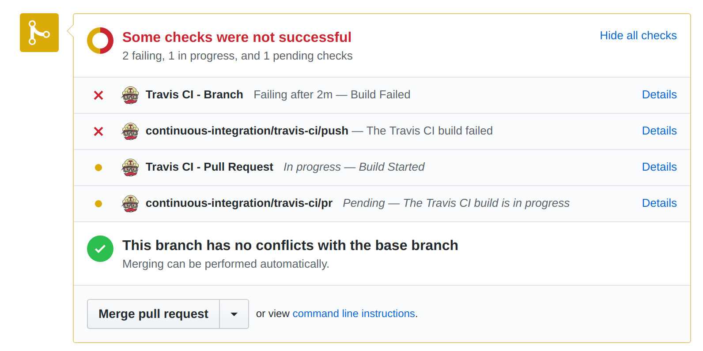
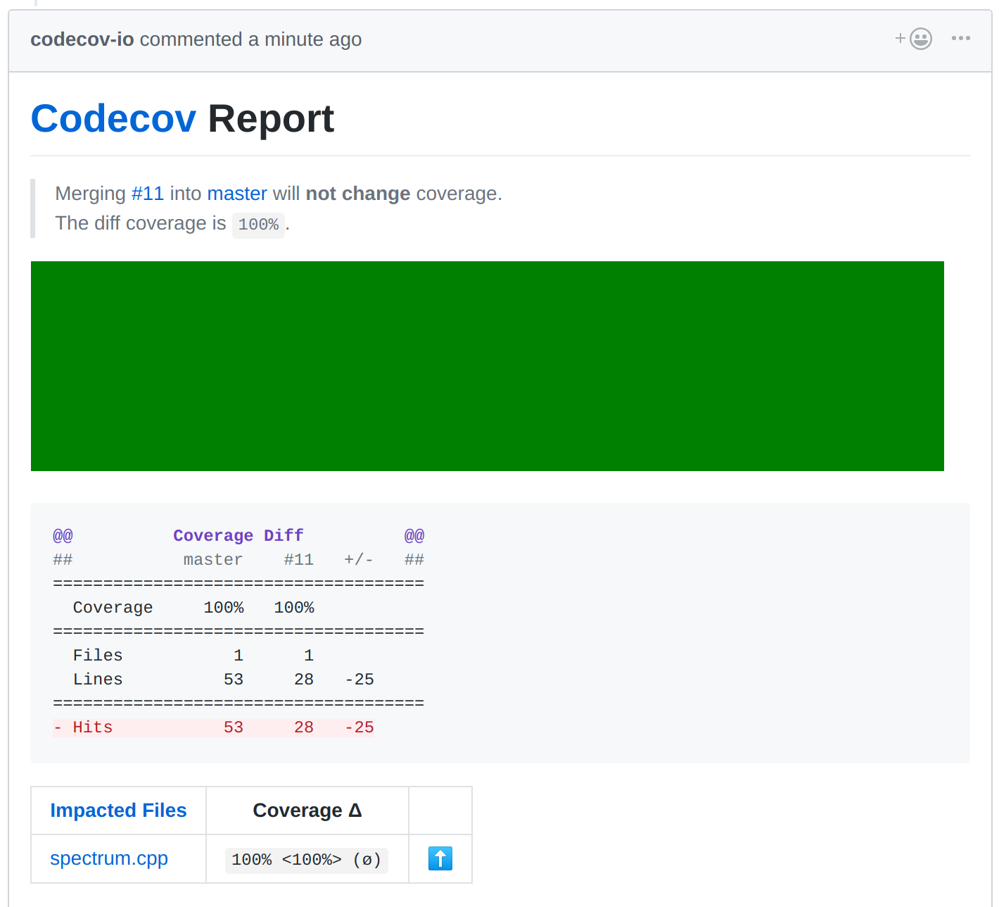

Travis CI - repo configuration
C++11 - simple builds
script: clang++ --version
$ clang++ --version
clang version 5.0.0 (tags/RELEASE_500/final)
C++ builds
script:
- make CXX=clang++-6.0
- make clean
- make CXX=g++-8
- cppcheck --enable=all .
- sloccount *.cpp
matrix:
include:
- os: linux
addons:
apt:
update: true
sources:
- ubuntu-toolchain-r-test
- llvm-toolchain-trusty-8.0
packages:
- clang++-8.0
- g++-8
- cppcheck
- sloccount
C++ code coverage
script:
- bash <(curl -s https://codecov.io/bash)
Branch merge


Deploying to GitHub Pages
deploy:
provider: pages
github-token: ${github_token}
skip-cleanup: true
on:
branch: master
R with packages
language: R
install:
- R -e "install.packages('csv')"
- R -e "install.packages('rjson')"
- R -e "install.packages('rmarkdown')"
script: make
bash with dot
script: make
install: sudo apt install graphviz
Python with requests
language: python
python: "3.6"
script: make
# This is implicit
# pip install -r requirements.txt
requests
Linting and profiling
script:
- make
- ./spectrum.o
- gprof ./spectrum.o
script:
- cppcheck --enable=all .
Compiler options
# Standard
--std=c++2a --all-warnings --extra-warnings --pedantic-errors
# Warnings that are not included by *all* and *extra* but sound like a thing we
# want to know about
-Werror -Wshadow -Wfloat-equal -Weffc++ -Wdelete-non-virtual-dtor -Warray-bounds -Wattribute-alias -Wformat-overflow -Wformat-truncation -Wmissing-attributes -Wstringop-truncation -Wdeprecated-copy -Wclass-conversion
# And a whisper of optimisation
-O1
# Profiler
-pg
# Code coverage (gcc only, ignored by clang)
-g --coverage